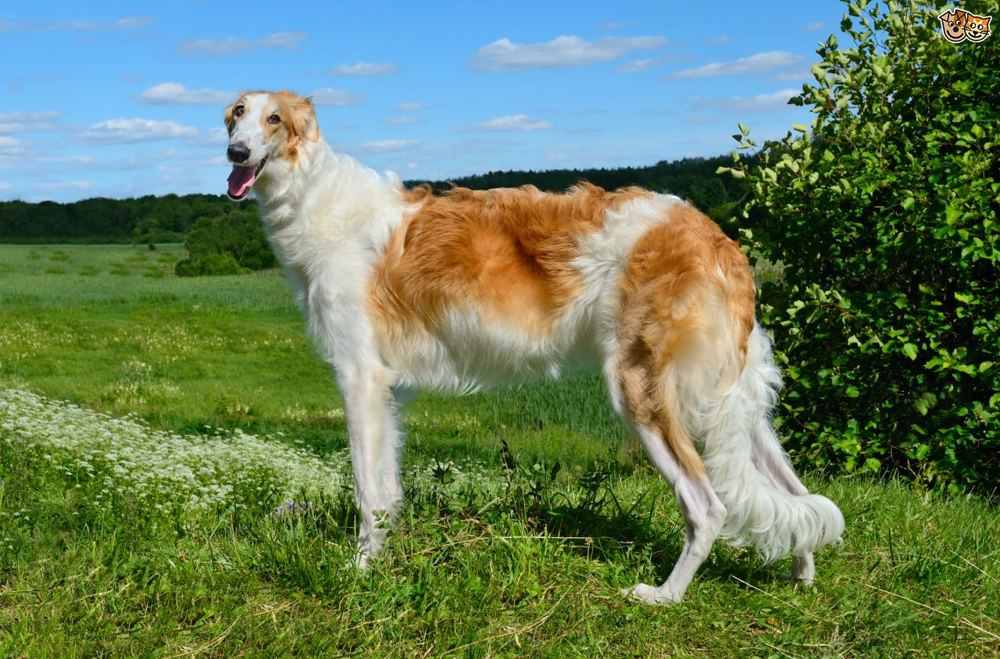

Борзая
- Продолжительность жизни: 10-13 лет
- Группа: Охотничья
- Окрас шерсти: Окрас борзых бывает разный. Преимущественно - белого, серого и песочного окрасов
- Длина шерсти: длинная
- Линька: очень сильно линяет
- Рост кобеля: 65 - 70 см
Борзые собаки— группа пород охотничьих ловчих собак, для безружейной охоты (травли) на зверей.
Борзая - превосходная собака. Ее главными достоинствами являются удивительная красота и прекрасный характер.
В России эта порода известна как гончая. Это достойный выбор для тех, кто любит подолгу гулять на улице,
бегать по вечерам или кататься на велосипеде. Борзая обожает активный отдых!
Относясь к крупной породе, борзая не требует к себе особого внимания. Особенности экстерьера собаки:
длинная и узкая форма черепа; длинный, закручивающийся, висячий хвост; густая шерсть на шее; темные,
миндалевидной формы глаза (вы сразу обращаете внимание на них, смотря на мордочку собаки).
Борзая обладает хорошим характером. Со своим хозяином она нежна, аккуратна, терпелива.
Однако с чужаком, в момент опасности она может быть агрессивной и решительной.
Во время дрессировки и обучения могут возникнуть сложности из-за упрямства собаки.
Борзой нравится быть всегда чистой и опрятной, поэтому она любит мыться.
Собака не требует к себе большого внимания: может совершенно спокойно часами быть одна.
Больше всего борзая любит проводить время на открытом воздухе, здесь ей комфортнее всего.
По своим скоростным данным она одна из самых быстрых собак в мире.
Если вы хотите завести еще одного питомца, то лучше это сделать, когда Ваша борзая – еще щенок,
так как ему будет проще свыкнуться с мыслью о том, что кроме него в семье есть еще и другие любимцы.
